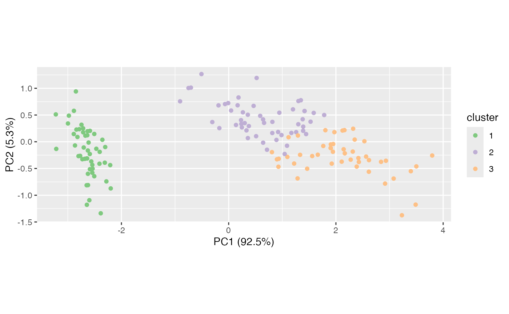

Functionality for k-means clustering ('kmeans') objects
methods-kmeans.RdThese methods extract data from, and attribute new data to,
objects of class "kmeans" as returned by stats::kmeans().
# S3 method for kmeans as_tbl_ord(x) # S3 method for kmeans recover_rows(x) # S3 method for kmeans recover_cols(x) # S3 method for kmeans recover_coord(x) # S3 method for kmeans augmentation_rows(x) # S3 method for kmeans augmentation_cols(x) # S3 method for kmeans augmentation_coord(x)
Arguments
| x | An ordination object. |
|---|
Examples
#> [1] "data.frame"#> Sepal.Length Sepal.Width Petal.Length Petal.Width Species #> 1 5.1 3.5 1.4 0.2 setosa #> 2 4.9 3.0 1.4 0.2 setosa #> 3 4.7 3.2 1.3 0.2 setosa #> 4 4.6 3.1 1.5 0.2 setosa #> 5 5.0 3.6 1.4 0.2 setosa #> 6 5.4 3.9 1.7 0.4 setosa# compute 3-means clustering on scaled iris measurements set.seed(5601L) iris %>% subset(select = -Species) %>% scale() %>% kmeans(centers = 3) %>% print() -> iris_km#> K-means clustering with 3 clusters of sizes 50, 53, 47 #> #> Cluster means: #> Sepal.Length Sepal.Width Petal.Length Petal.Width #> 1 -1.01119138 0.85041372 -1.3006301 -1.2507035 #> 2 -0.05005221 -0.88042696 0.3465767 0.2805873 #> 3 1.13217737 0.08812645 0.9928284 1.0141287 #> #> Clustering vector: #> 1 2 3 4 5 6 7 8 9 10 11 12 13 14 15 16 17 18 19 20 #> 1 1 1 1 1 1 1 1 1 1 1 1 1 1 1 1 1 1 1 1 #> 21 22 23 24 25 26 27 28 29 30 31 32 33 34 35 36 37 38 39 40 #> 1 1 1 1 1 1 1 1 1 1 1 1 1 1 1 1 1 1 1 1 #> 41 42 43 44 45 46 47 48 49 50 51 52 53 54 55 56 57 58 59 60 #> 1 1 1 1 1 1 1 1 1 1 3 3 3 2 2 2 3 2 2 2 #> 61 62 63 64 65 66 67 68 69 70 71 72 73 74 75 76 77 78 79 80 #> 2 2 2 2 2 3 2 2 2 2 3 2 2 2 2 3 3 3 2 2 #> 81 82 83 84 85 86 87 88 89 90 91 92 93 94 95 96 97 98 99 100 #> 2 2 2 2 2 3 3 2 2 2 2 2 2 2 2 2 2 2 2 2 #> 101 102 103 104 105 106 107 108 109 110 111 112 113 114 115 116 117 118 119 120 #> 3 2 3 3 3 3 2 3 3 3 3 3 3 2 2 3 3 3 3 2 #> 121 122 123 124 125 126 127 128 129 130 131 132 133 134 135 136 137 138 139 140 #> 3 2 3 2 3 3 2 3 3 3 3 3 3 2 2 3 3 3 2 3 #> 141 142 143 144 145 146 147 148 149 150 #> 3 3 2 3 3 3 2 3 3 2 #> #> Within cluster sum of squares by cluster: #> [1] 47.35062 44.08754 47.45019 #> (between_SS / total_SS = 76.7 %) #> #> Available components: #> #> [1] "cluster" "centers" "totss" "withinss" "tot.withinss" #> [6] "betweenss" "size" "iter" "ifault"# visualize clusters using PCA iris %>% subset(select = -Species) %>% prcomp() %>% as_tbl_ord() %>% mutate_rows(cluster = iris_km$cluster) %>% ggbiplot() + geom_rows_point(aes(color = factor(as.character(as.integer(cluster)), levels = as.character(seq(3L))))) + scale_color_brewer(type = "qual", name = "cluster")#> # A tbl_ord of class 'kmeans': (150 x 3) x (4 x 3)' #> # 3 coordinates: 1, 2, 3 #> # #> # Rows: [ 150 x 3 | 0 ] #> `1` `2` `3` | #> | #> 1 1 0 0 | #> 2 1 0 0 | #> 3 1 0 0 | #> 4 1 0 0 | #> 5 1 0 0 | #> #> # #> # Columns: [ 4 x 3 | 0 ] #> `1` `2` `3` | #> | #> 1 -1.01 -0.0501 1.13 | #> 2 0.850 -0.880 0.0881 | #> 3 -1.30 0.347 0.993 | #> 4 -1.25 0.281 1.01 |#> # A tbl_ord of class 'kmeans': (150 x 3) x (4 x 3)' #> # 3 coordinates: 1, 2, 3 #> # #> # Rows: [ 150 x 3 | 2 ] #> `1` `2` `3` | .name .cluster #> | <chr> <fct> #> 1 1 0 0 | 1 1 1 #> 2 1 0 0 | 2 2 1 #> 3 1 0 0 | 3 3 1 #> 4 1 0 0 | 4 4 1 #> 5 1 0 0 | 5 5 1 #> # … with 145 more rows #> # #> # Columns: [ 4 x 3 | 1 ] #> `1` `2` `3` | .name #> | <chr> #> 1 -1.01 -0.0501 1.13 | 1 Sepal.Length #> 2 0.850 -0.880 0.0881 | 2 Sepal.Width #> 3 -1.30 0.347 0.993 | 3 Petal.Length #> 4 -1.25 0.281 1.01 | 4 Petal.Width# summarize clusters with standard deviation iris_km_ord %>% tidy() %>% transform(.sdev = sqrt(.withinss / .size))#> .name .size .withinss .inertia .prop_var .sdev #> 1 1 50 47.35062 NA NA 0.9731456 #> 2 2 53 44.08754 NA NA 0.9120529 #> 3 3 47 47.45019 NA NA 1.0047779# discriminate between clusters 2 and 3 iris_km_ord %>% ggbiplot(aes(x = `2`, y = `3`), color = factor(.cluster)) + geom_jitter(stat = "rows", aes(shape = .cluster), width = .2, height = .2) + #geom_cols_vector(aes(color = `1`)) + #geom_cols_text_radiate(aes(label = .name), size = 3) + geom_cols_axis(aes(color = `1`)) + geom_cols_axis_text(size = 2, label_dodge = .1) + geom_cols_axis_ticks() + geom_cols_text(aes(label = .name), size = 3, alpha = .5) + scale_x_continuous(expand = expansion(mult = .8)) + scale_y_continuous(expand = expansion(mult = .5)) + ggtitle( "Measurement loadings onto clusters 2 and 3", "Color indicates loadings onto cluster 1" )